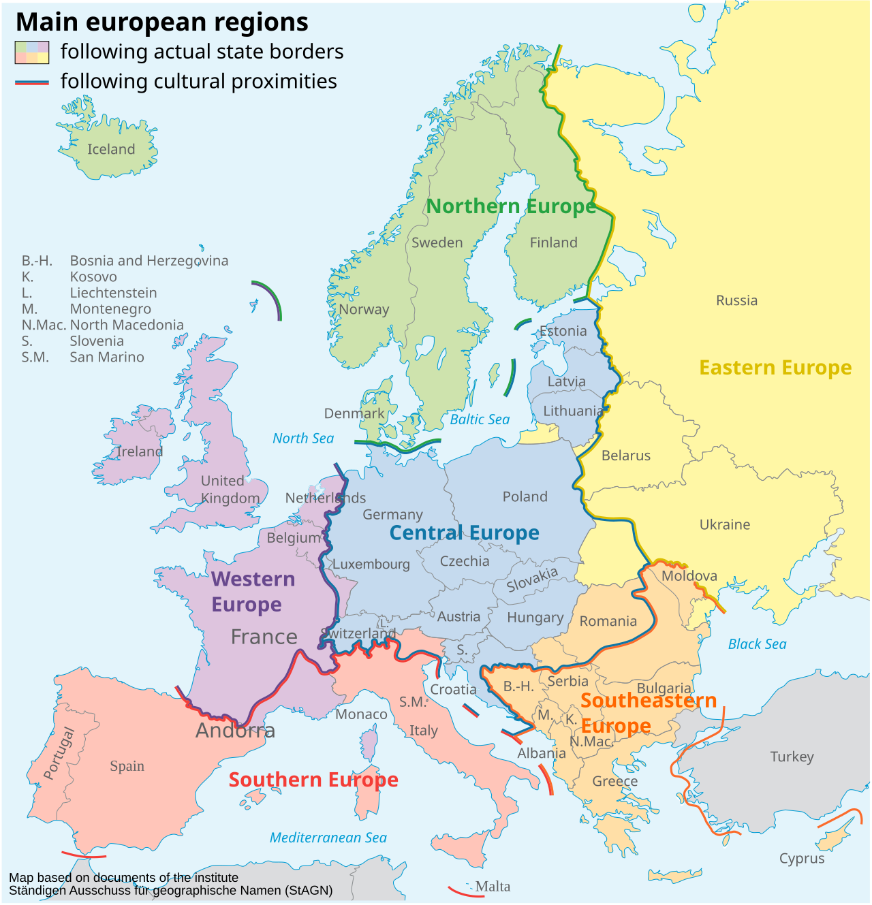

CityLoop Quest Dubrovnik


Les premières chroniques de Dubrovnik placent la ville dans l’orbite de l’Empire byzantin. Cette protection n’empêchait pas une large autonomie locale : les familles dirigeantes organisaient la commune, armaient des navires et négociaient avec leurs voisins. Au XIIe siècle, la cité était déjà assez importante pour conclure des accords commerciaux avec des ports italiens et des souverains balkaniques.
La quatrième croisade bouleversa l’Adriatique. De 1205 à 1358, Dubrovnik reconnut la souveraineté de Venise. Les Vénitiens nommaient un comte, mais les institutions locales continuèrent à se développer. Le traité de Zadar de 1358 plaça ensuite Raguse sous la couronne hongro-croate. En échange d’un tribut et de certaines obligations, la ville obtint une autonomie extérieure si large que l’on parle véritablement de République de Raguse.
Du XVe au XVIe siècle, la République atteignit son apogée. Elle entretenait des consulats, une flotte marchande et des colonies de négociants jusque dans l’Empire ottoman. Après 1458, elle versa un tribut au sultan, ce qui lui garantissait l’accès aux marchés balkaniques. Dans le même temps, elle conservait des relations avec les puissances chrétiennes. Sa neutralité était moins une posture morale qu’un exercice d’équilibre permanent, soutenu par l’espionnage, les cadeaux et une correspondance diplomatique infatigable.
Le 6 avril 1667, un séisme détruisit une grande partie de la ville et tua plusieurs milliers de personnes, dont le recteur et de nombreux nobles. Un incendie suivit. Des voisins envisagèrent de profiter du désastre, mais la République survécut. Les reconstructions baroques modifièrent Stradun, la cathédrale et l’église Saint-Blaise. Le commerce déclina progressivement, concurrencé par de nouvelles puissances et de nouvelles routes, sans disparaître complètement.
En 1806, les troupes françaises entrèrent à Dubrovnik sous prétexte de la protéger. Le maréchal Marmont abolit la République le 31 janvier 1808. Après la chute de Napoléon, la ville fut intégrée à l’Empire d’Autriche, puis à l’Autriche-Hongrie. Le XIXe siècle apporta vapeur, tourisme naissant et nouvelles identités nationales. Après 1918, Dubrovnik appartint au royaume des Serbes, Croates et Slovènes, puis à la Yougoslavie socialiste après 1945.
La vieille ville fut inscrite au patrimoine mondial de l’UNESCO en 1979. Douze ans plus tard, elle subit des bombardements pendant la guerre d’indépendance croate ; l’attaque du 6 décembre 1991 marqua particulièrement les mémoires. Les restaurations internationales redonnèrent aux toitures leur unité, mais les pierres neuves restent des témoins. Depuis l’indépendance de la Croatie, Dubrovnik vit une nouvelle période dominée par le tourisme mondial, avec un défi familier : préserver sa liberté de décision face à des forces économiques bien plus grandes qu’elle.